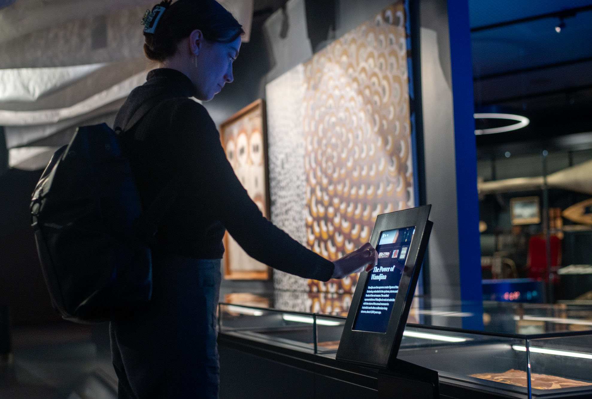
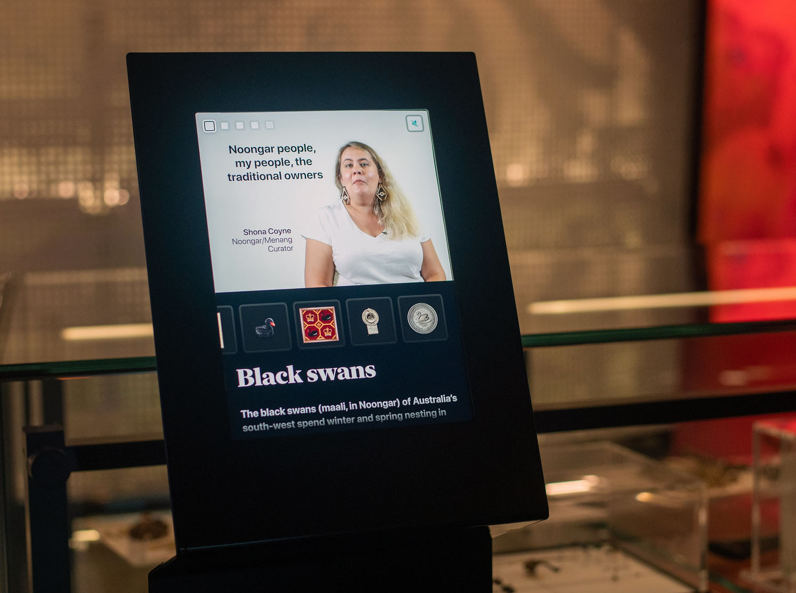
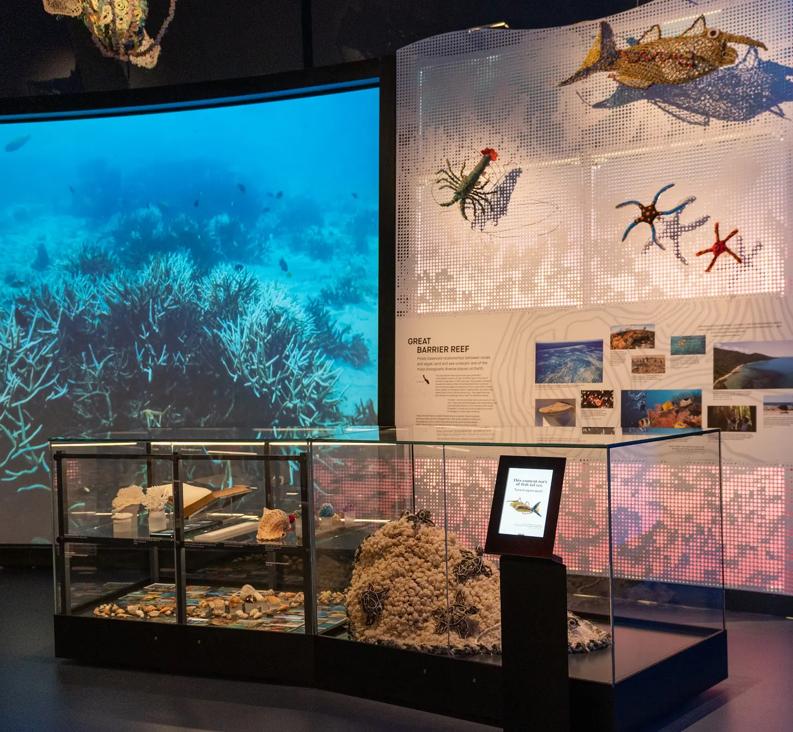

Digital Object Labels for National
Museum of Australia
Canberra, Australia
At the National Museum of Australia, we designed and developed the museum-wide system for Digital Object Labels, creating a consistent way for visitors to access additional stories, context, and interpretation alongside collection objects.
I led the experience design and developed the content framework for the labels, shaping how visitors encounter short, focused media rather than dense blocks of text. Many labels feature museum staff speaking directly about the objects they care for, bringing a more personal voice into the gallery and helping visitors quickly understand why particular objects matter.

Accessibility was central to the design. The interface supports visual, aural, and hands-free interaction, including attract-loop playback, large integrated subtitles, and clear, legible controls that work comfortably in busy gallery environments.

Behind the scenes, the system connects to the museum's collections API and a custom CMS, allowing staff to publish and update content easily while tracking usage across the museum.
